Navimate
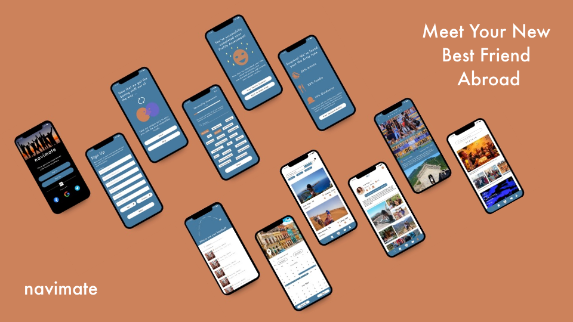A responsive web app that connects you with locals anywhere
What is Navimate?
Navimate will allow users to find locals to hang out with who will offer genuine and unique experiences. The app will display locals within their travel destination who will say a little blurb about themselves and what they typically do on a night out. Travelers will then be able to sort through locals who they’d like to hang-out with. The app will be ‘friend’ focused rather than for relationships.
Whats been missing from the solo travel experiance...
Lack of genuine or unique experiences when traveling due to the social challenges of meeting and connecting with locals.
Navimate looks to meet user's needs with...
A responsive web app that connects you with compatible locals based off of your planned or current location when traveling.
User Research Insights
- Other patterns that were expressed were that there was a lack of apps/websites that sold or discussed experiences opposed to stays/flights.
- Users felt that they always want to connect with people abroad but struggle with social anxieties that prevent them from putting themselves out there
- Users also struggle to make friends abroad due to the fear of approaching a local who may not speak their language and for the question of safety
- All users expressed that they would enjoy solo travel but feel too afraid to face problems on their own and being in a place where they don’t know anyone
- All users claimed to only travel within groups or with family because they all felt it’s scary to travel alone and felt more safe within group. They all say they stay within their group because they are experiencing a memory together rather than with a local
- Users wanted to have access to real local experiences opposed to the common tourist activities
User Flow
Users will be able to easily move through theapp after the initial sign up & personality assessment. It will then lead them to the search page and the bookmark button of the app.
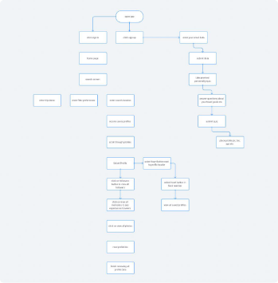Jobs To Be Done (JTBD)
- When I want to meet with locals on my vacation, I want to be able to be able to see how many followers, comments, statements they have, so I know that I will have a safe experience.
- JTBD: When I make a search, I want to be able to save locals/experiences I want to check out or message later, so I can give myself time to think it over and view it at a later time.
- JTBD: When I make a profile, I want to be able to describe my interests, time of stay and what I’d like to do in that area so I can meet with locals who want to do the same things.
Ideation & Low Fidelity Wireframes
Onboarding Personality Assessment
I felt that a quiz given to the user after signing up would make it easier for them to connect with others by the results personalizing their profile in seconds. The quiz also ensures that suggested locals are already their ‘vibe’. Once they complete the quiz 3 personalized icons appear on their profile that show their major interests such as a fork for being a ‘foodie’.
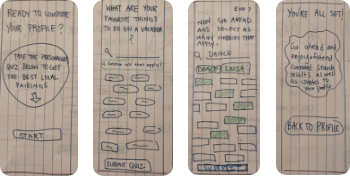Searching Profiles
With meeting locals abroad I felt that users should have the option to make plans with locals before they even arrived to their destination. The search allows users to set the date / location of their vacation so they can start planning ahead and view locals who are available at that particular time.
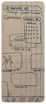Reviewing Profiles
When viewing profiles I want the user to feel safe with who ever their meeting up with. Navimate looks to ensure credibility by displaying real photos and entries from past Navimate users.
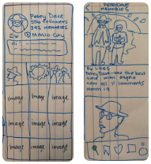Saving Profiles
Because trips are planned in advance, users will have the option to save profiles of locals they want to hang out with but would rather message them closer to the trip date as there plans might change.
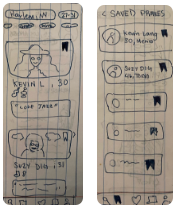User Feedback
After posting my sketches to make an online prototype I asked a few friends and colleagues what they thought. I asked them mainly to critique the usability and if using navimate was intuitive. Heres some of their feedback…
“Was confused when entering a search because she didn’t know how to enter it. She felt that if there was an enter button or more clear buttons then making a search would be easier.” - Julianna , 23 , NYC
“Feels like the profiles are too similar to Instagram because it feels like they’re influencers and that makes me timid to reach out to them I feel reviews and less social status could be be a more friendly attitude." - Megan , 26 , NYC
“Feels that the advanced filters should be in the initial home page of making the search. She also felt that the age on the profile should be kept within the advanced filters and the dates should be more prominent so that availability of the person is more highlighted.” - Jessica , 24 , L.A
“Feels that the search page is confusing as the photos feel random. It feels like the photos need more labeling because she don’t really know what she’s looking at. A clearer home page would allow her to focus on making a search and know where to click next.” - Adam , 28 , Boston
Mid-Fidelity Wireframes
Searching & Saving Profiles
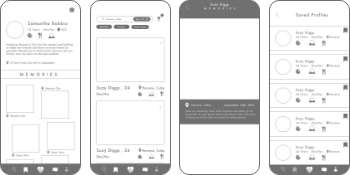Sign Up & Personality Assessment
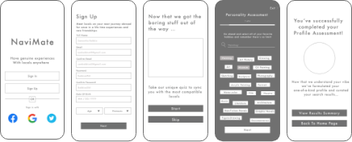High-Fidelity Wireframes
After low and mid-fidelity user testing I landed on this design which users found to be clear and easy to use.
Sign Up & Personality Assessment
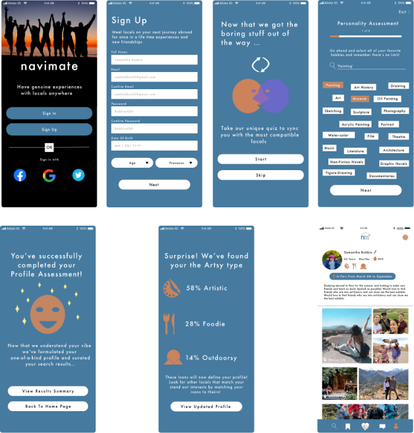Searching , Saving and Reviewing Profiles
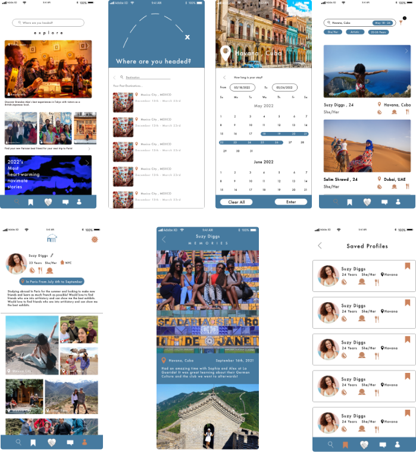Color Pallete
I wanted the app to have a clean look with minimal color. I felt that the blue was a calm friendly color that hasn’t been used by many other apps so it would distinguish navigates brand. I added the orange for highlights to give an uplifting ‘joyous vibe’.
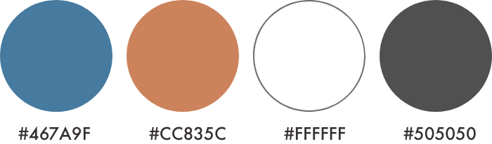Typography
I choose Futura as it has a clean look but is also a bit more interesting then the classic iPhone font. Futura also has a range of variations and carries a more ‘edgy’ feeling
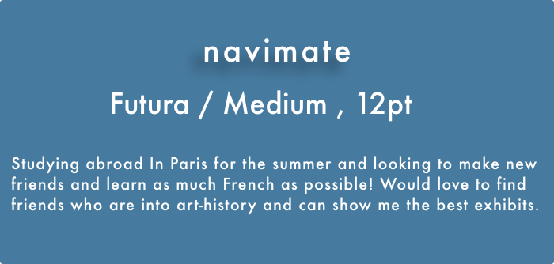